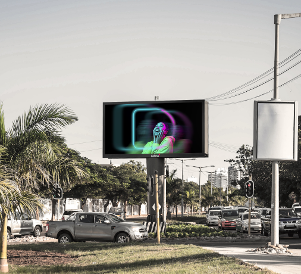
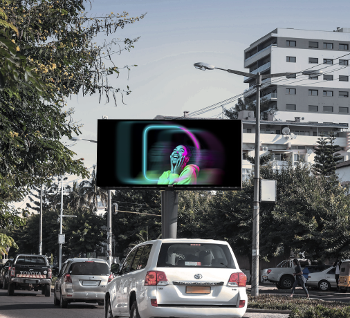

DALIMA | Publicidade Digital Outdoor
Av. 25 de Setembro, 2400 RC drt Maputo, Moçambique

Times Square A
Av. Avenida Zedequias Manganhela, rua do pântano.
MARÍTIMO
Av. da Marginal
NAVAL
Av. da Marginal, perto e em direcção à ao Clube Naval

ZAMBI
AV. 10 de Novembro, no restaurante Zambi
OUA
Av. OUA na rotundana das bombas de gasolina da Petromoc
24 DE JULHO
Cruzamento da Av. Albert Luthuli e Av. 24 de Julho
33
Cruzamento da Av. 25 de Setembro e Av. Vladimir Lenine
CASINO A
Av. da Marginal
CASINO B
Av. da Marginal
IMPRENSA
Cruzamento da Av. 25 de Setembro e Av. Vladimir Lenine
JULIUS A
Rotunda das Av. Julius Nyerere e Av. Kenneth Kaunda em direcção à Av. da Marginal
JULIUS B
Rotunda das Av. Julius Nyerere e Av. Kenneth Kaunda em direcção à Presidência
POLANA A
Av. Julius Nyerere, Sede da Tv Miramar em direcção à Av. da Marginal
POLANA B
Av. Julius Nyerere, Sede da Tv Miramar em direcção à Presidência
KAUNDA
Av. Kenneth Kaunda perto da Rua da França

PANDORA
Cruzamento da Av. Eduardo Mondlane e Av. Vladimir lenine

PIRI PIRI CIRCUS
Cruzamento da Av. Julius Nyerere e Av. 24 de Julho
Cruzamento da Av.Julius Nyerere e Av. 24 de Julho
POLANA SQUARE
Cruzamento da Av. Julius Nyerere e Av. 24 de Julho
PONTO-FINAL
Cruzamento da Av. Eduardo Mondlane e Av. Guerra Popular
RONIL
Cruzamento da Av. Eduardo Mondlane e Av. Karl Marx
SCALA
Cruzamento da Av. 25 de Setembro e Av. Samora Machel

XENON
Cruzamento da Av.Eduardo Mondlane e Av. Julius Nyerere